第6章 重要的反转形态
我们从交易实践者的角度批评过道氏理论的某些缺陷，其中之一就是该理论没有告诉我们具体买什么股票（第9版编者按：很明显现在这已不成为问题，因为投资者可以像买卖股票一样交易思柏达道琼斯工业平均指数交易所交易基金，缩写：DIA）。保守而富裕的投资者往往更注重投资安全而不是利润最大化，他们可以通过组建一个全面且多样化的稳健蓝筹股组合，并在道氏理论发出牛市信号时买入该组合。该组合中的某些股票会跑赢组合内的其他股票，有些可能会出问题，但组合的多样性会保证投资者获得一个理想的平均回报。如果我们能找到一个办法买入最有可能上涨的股票，并在利好被完全消化时迅速而正确地调仓，那么整体的收益水平一定会更好。
还有一种增加收益的可能性，就是在上升趋势已经出现但道氏理论尚未发出信号之前买入，并在市场已经开始下跌而道氏理论尚未发出熊市信号时卖出。
我们还提到了道氏理论无助于进行中线交易。如果可以掌握每一波上升行情且避开每一波市场修正，或者说，如果可以在市场上既做多，又做空，无疑能挣更多钱。
最后，尽管所有股票一般都会随市场齐涨齐跌，但是个股的价格走势却大相径庭。平均指数毕竟只是用来表示众多不同股票的平均水平。1946年5月29日，道琼斯工业平均指数的这轮长期牛市走到了尽头，但是美国联合航空公司（United Air Lines）的股价见顶于1945年12月，通用汽车公司（General Motors）的股价见顶于1946年1月，固特异公司（Goodyear）于4月，杜邦公司（DuPont）于6月，申利公司（Schenley）于8月。是否有办法从这些差异中获利呢？
个股图表的技术分析完全可以回答这4个问题中第一个也是最重要的问题，即选股。技术分析对道氏理论通常给我们一个良好的开端；技术分析其实也从很大程度上解决了中线趋势的问题，尽管对这些点对应的政策和风险市场仍有保留意见。最后，细心的技术分析师应该在任何情况下都能让我们提前卖出那些在平均指数见顶前就已经见顶的股票，并及时将资金转入那些待涨的股票。
平均指数通常会体现所有已知信息和将影响证券价格未来走势的可预见因素。个股也是如此。而图表正是所有这些因素的载体，其中包括“内幕交易者”的操作。
让我们先假设你不是一个内幕人士。那些神秘的内幕人士全面地掌握了所有的事实、数据和可能影响企业发展的所有消息，可以真正地影响股价（第9版编者按：且最终锒铛入狱）。但是，在真实的情况下，市场上并没有像大多数业余投资者猜测的那么多内幕人士，而且他们也没有像公众指责的那样操纵着市场1/10的活动。甚至可以肯定地说内幕人士也会犯错；他们会第一个承认这一点。他们的计划常常会被一些意外情况或非理性力量打乱。即便偶尔得逞，也必须在交易所交易。（第9版编者按：现在来说，已经不完全是这样了。内幕交易者在互联网泡沫时期出手股票，这个过程持续1年没有报道。但这是另外一回事。）他们的操纵行为必然会改变影响股票的供求关系。不论他们做什么，迟早都会反映在图表上。非内幕人士可以探测到或至少发现供求关系是如何受到内幕操作和其他主要市场因素的影响。因此，作为非内幕人士，你也可以跟随他们进行操作。
6.1 重要的反转形态
股价变动各有趋势。有的趋势顺畅，有的曲折；有的趋势短暂，有的持久；有的不规则或很难定义，有的则出奇的规整，或者说正常，展现出高度一致的上升与下跌形态。这些趋势迟早要改变方向，可能是反转（如从涨变跌），也可能是进行箱体震荡，然后再继续沿原有方向前进。
在大多数情况下，当股价趋势反转时，不论是多转空还是空转多，图表上都会出现一个可辨识的反转形态。有些图表形态迅速成形，有些则需数周才能确认趋势反转。大体上说，反转区域越大（价格波动越大，反转区域的形成越耗时）则其意义越重大。因此，大致说来，一个大的反转形态表示后续有大的起落，小形态则预示着小的起落。毫无疑问，技术图表分析师的首要任务就是学习认识重要的反转形态，并判断它们预示着什么交易机会。
有这么一种形态，它出现并成形于一个交易日之内，因此被称为“单日反转”。有时候，单日反转也有很大的意义，意味着涨势或跌势的止步（至少是暂停），但是一般说来，它并不表示趋势会立即向反方向逆转。单日反转是一种有用的形态，后续章节会做更详细的阐述。但是意味着大势逆转的反转形态却需要花更长的时间来形成。一辆正在以时速70英里 [1] 行驶的汽车不会在一瞬间停下，并在同一瞬间调头，再以同样的速度朝反方向行驶。
6.2 趋势反转的时间要求
形成一个重要的趋势反转需要时间（还有成交量和价格走势），这很容易理解，不需要我们借助“行驶中的汽车”这个例子来解释。只要稍稍想一下，我们就能很快明白其背后的逻辑。我们可以看一个特定的情形：假设有一小群信息充足、资本雄厚的投资者，即主力（第9版编者按：比如几个公募基金），他们认为某公司40美元/股的市价很便宜，并且由于公司业绩不断发展，很快受到投资者青睐，其旺盛的需求将把股价推升至60或65美元/股。主力认为只要操作得当，且没有意外，就可以将20美元的利润装进口袋。于是，他们悄悄建仓吸筹，持仓渐渐达到几千股，甚至可能是该公司全部的自由流通股份。然后，他们静观其变。专业人士有所察觉，市场上利好传言四起，一些精明的投资者发现了该公司前景光明，图表分析师从该股走势发现有人正在吸筹。此时买家发现市场上该股供不应求，只有提高报价才能买到。股价开始上涨。
随着越来越多的投资者被该股吸引，股价加速上涨。同时，亮丽的财务数据（营收、红利增长等）也在不断推升股价，这完全符合主力的预期。最后，股价升至他们计划获利了结的水平。而此时出货的操作至关重要，甚至需要比建仓更多的技巧和耐心。假设主力有20000股需要出手，他们不能一口气把这20000股砸向市场，这样做只会损害自己的利益（这种损害甚至可能是永久性的）。他们必须慢慢出货，避免引起别人的注意，不断调整出货量，以免供大于求。如果该股的总成交量达到每天2000股，那么他们可以每天出手500股，并且不引起股价下跌。（但其他人迟早也会开始出货，最终引起股价下跌，他们必须时刻准备在股价上涨的势头减弱时进行获利了结。）所以，主力出货的时机是股价看似见顶时或达到预期目标时，此时离真正见顶还有一段时间。一旦有买盘出现，他们就迅速成交。
不久后（通常是主力清仓前），需求就会减弱，很可能是因为买方察觉到卖盘的增加。股价开始回调。他们立刻暂停出货，如果股价跌幅太大，他们甚至会回购一些来支撑股价。随着抛压减轻，股价再次回升。这次，他们不进行任何操作，等待股价创新高。股价的上涨会恢复其他持股人的信心，并吸引更多的买家进场。一旦交投再次活跃起来，他们就继续出货，如果一切顺利，2～3周内就可以抢在需求再度减弱前出手全部股票。
此时，主力的20000股已经全部转手，并录得丰厚利润。如果他们正确判断了市场走势，以当时股价可能达到的最高价出手股票，那么需求会低迷很长一段时间。股价会先降至之前的支撑位附近，再小幅回升，这主要是因为一些在前期成交量见顶时未能获利了结的投资者急于抛盘，而一些仍然看多的投资者则借机接盘。小幅回升后，股价会进入中线或长线下跌的趋势。
现在读者可以充分了解为什么在特定的环境下，顶部区域（代表出货的形态）的形成需要时间和成交量。但是，不论市场中发挥作用的主体是一小群内幕人士、几个投资机构组成的主力，还是共同关注某公司股票的广大股民，股价受到的影响都一样。出货需要时间，并伴随着大量股票的易手。有趣的是，出货往往伴随着清晰的顶部形态，建仓往往伴随着清晰的底部形态。
6.3 头肩形
如果你在脑海中以图形的方式回忆上文描述的出货过程，就会得到一个头肩顶的形态。这也是最常见、最可靠的反转形态。对头肩顶侃侃而谈的人很多，但真正能辨识它的人却很少。
最典型，或者说最理想的头肩顶形态正如图6-1所示。该形态主要由以下几个阶段构成。
A.一波强劲的上涨过程，股价大幅升高，成交量显著扩大，之后进入短线回调，成交量缩小，远小于股价上升及达到顶部时的水平。这个阶段称为“左肩”。
B.另一波伴随着高成交量的股价上涨，并达到高于左肩顶部的水平，之后的回调（伴随着成交量萎缩）将股价带到之前一波短线回调的底部附近，可能稍高于或稍低于这个底部，但无论如何都低于左肩的顶部。这个阶段称为“头部”。
C.第3波股价上涨，但成交量显著低于之前左肩和头部的成交量，且股价在达到头部的顶点之前就开始回落。这个阶段称为“右肩”。
D.最后，第3波跌势出现，股价跌破颈线（即连接左肩与头部之间的低点、头部与右肩之间的低点的一条线），并继续下探约3%。这个阶段称为“确认”或“突破”。
值得注意的是，对于一个有效的头肩顶形态来说，图6-1的4个阶段A、B、C、D都是必备的。任意一个阶段的缺失都会影响该形态的预测价值。在定义各阶段时，我们考虑到了可能出现的变化（每个头肩顶都有自己的特征），只包括了确认形态所必备的特征。下面让我们详细分析（见图6-2至图6-13）。
6.4 成交量的重要性
首先，让我们来考虑成交量的问题。在技术分析中，成交量非常重要，必须时刻关注。交易活动图表也会像价格区间的图表一样形成一个形态。这两者需同时满足特定要求才能够确认形态。但是成交量也是一个相对的概念。当我们说成交量高的时候，一般是指某只股票某时段内的成交水平明显高于同一时段内其他交易日的一般水平。成交的股数并不重要，如果根据技术标准（即同一股票最近的平均成交量）比较美国无线电公司（Radio Corporation）的6500股日成交量和博恩铝和黄铜公司（Bohn Aluminum and Brass）的500股日成交量，前者可能很低，而后者可能很高。我们之前讲到，成交量高是头肩顶中左肩的重要特征；也就是说在左肩上涨至顶部的过程中，交投活动要比前一波升势活跃，而左肩的下跌部分则伴随着成交量的降低。下一波升势也是如此。因此，任意两轮连续上涨且而第2波顶部高于第1波顶部的形态则可能分别成为头肩顶中的左肩和头部。
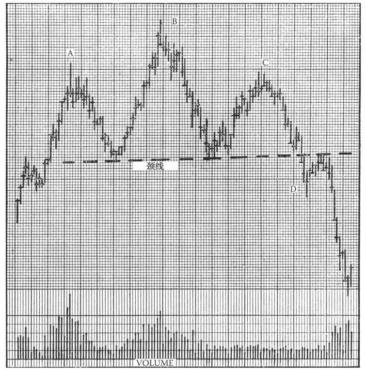
图6-1 此图为虚拟的日线图，股价绘于上方，成交量绘于下方。该图展示了一个理想的头肩顶反转形态，A、B、C、D分别代表上文所述的4个必备阶段
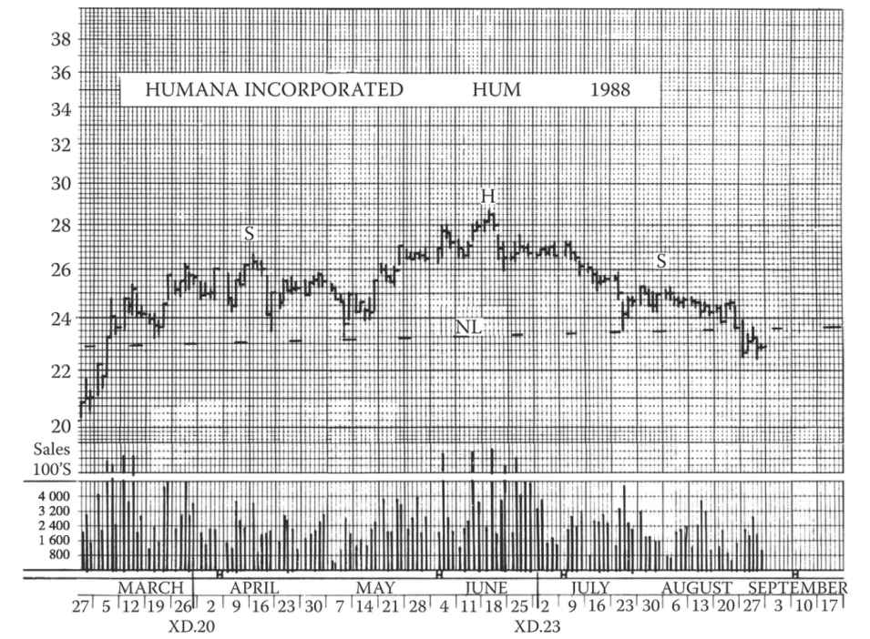
图6-2 从3月开始，“HUM”在日线图上形成了一个宽大的头肩顶部模式。8月的下跌以3%的降幅突破了颈线，确认了反转模式。这个头肩顶部模式的起码目标是18
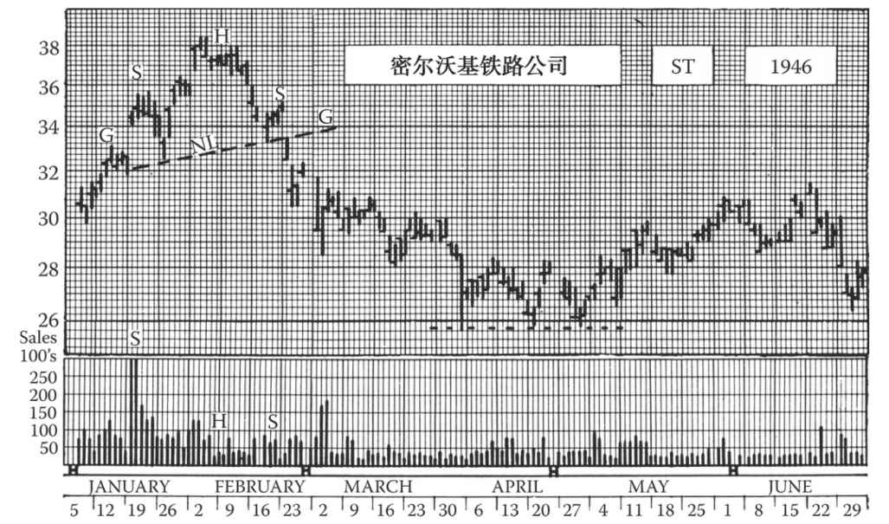
图6-3 密尔沃基铁路公司1946年1月1日至6月29日的日线图。该股在长线上涨的过程中于1946年2月出现了头肩顶形态，尽管两肩形态并不明显（图中S和S）。请注意此时的成交量变化。该形态的意义一直延续至4月（见下面几页内容）。3月30日至5月4日的箱形震荡走势是本书第9章的讨论范畴。公司股价10月跌至11½美元
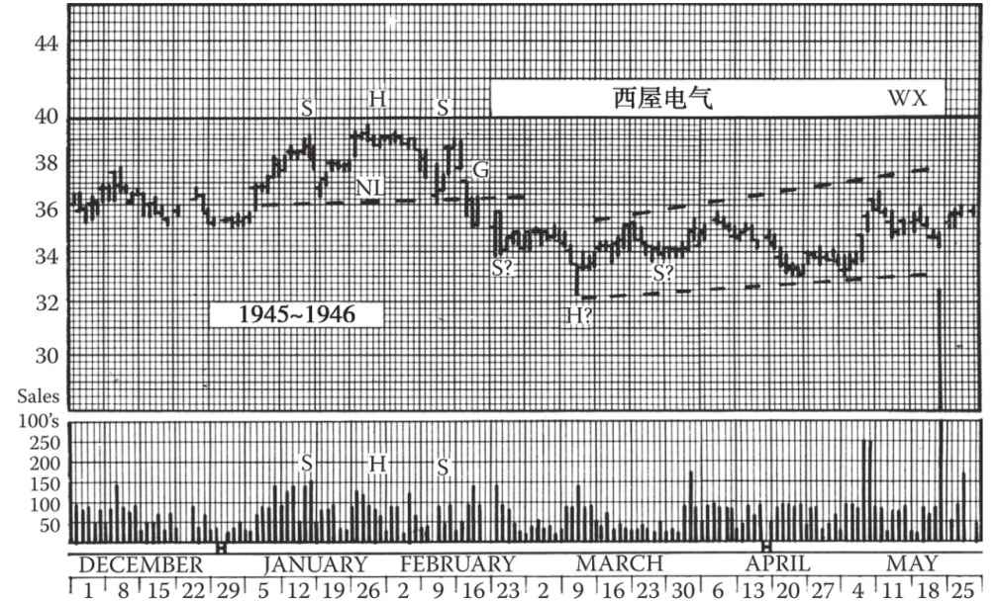
图6-4 西屋电气公司在1946年的牛市中出现的头肩顶（S-H-S）伴随着显著的宽幅波动。2月13日颈线（NL）突破后形成了突破缺口（G），本书第12章将详细讨论此现象。测算公式（见下文）预测股价初次下跌将跌至33美元。3月的头肩底形态（S？-H？-S？）未能形成（见第7章内容）。虽然春末出现了几波股价上涨，并且平均指数创新高，但该股仍未成功突破3月的头肩底颈线。同年11月，该公司股价已跌至21.5美元。请仔细观察1月后的成交量变化
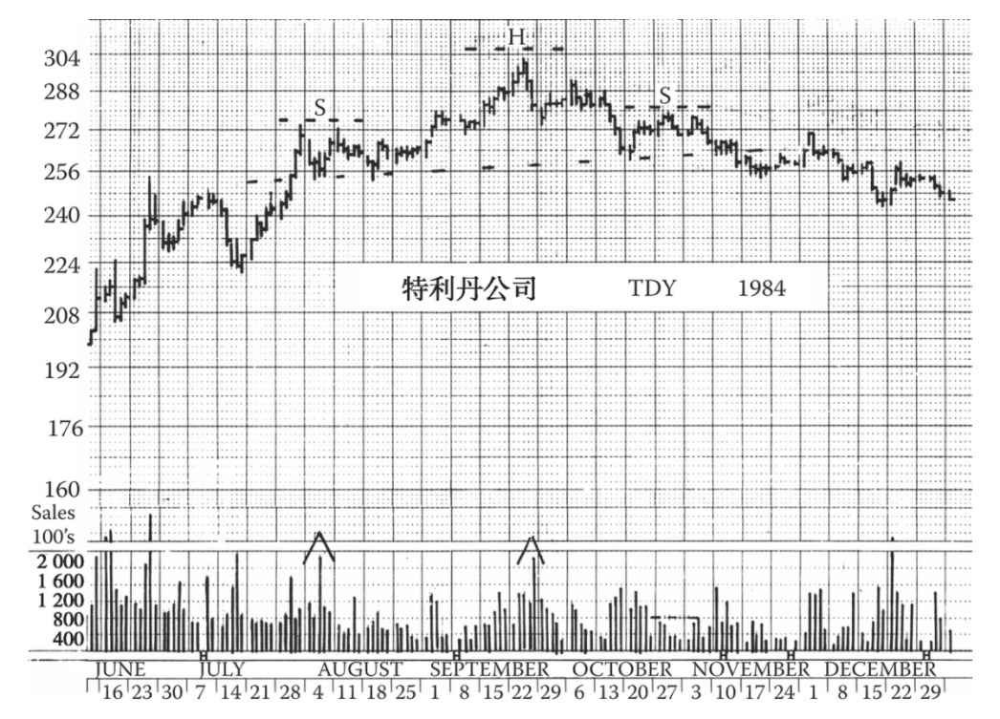
图6-5 特利丹公司的头肩顶形态历时5个月，12月股价伴随着高成交量跌破颈线，从而确认了趋势反转。由于该股价格昂贵，所以更合理的操作是买入4月行权价为260美元的认沽期权，而不是直接抛售现货。我们对于该股的测算目标是颈线（264美元）下44美元，即220美元
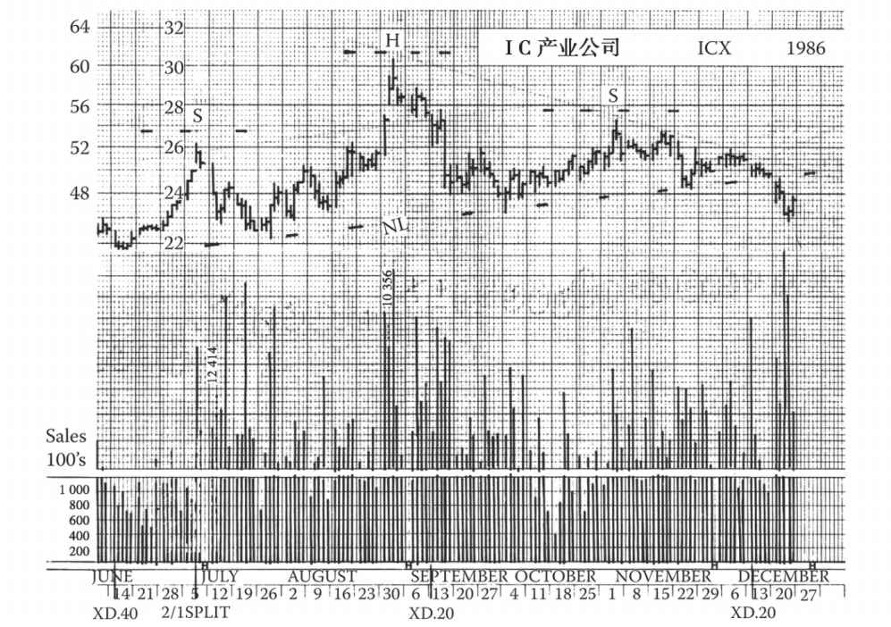
图6-6 IC产业公司已经历了10多年的强势上涨，股价涨幅惊人。但此时上涨势头减弱，见顶迹象显而易见。8月的峰值达到了1985年的测算目标。8月出现的缺口迅速得到回补，这表示此处为衰竭缺口。之后，一波回调将股价拉回支撑位，然后伴随着较低的成交量股价又缓慢回升到了7月高点，右肩形态得以形成。最后一周股价伴随着高成交量迅速跌破颈线，趋势反转得到确认。此头肩顶形态的最低目标是19.25美元，即1985年旗形的顶部价格。另一个可能出现的防守点位为14¼美元，即旗形的底部价格
当最近的顶部伴随的成交量低于前一个顶部时，可能表明一个真正的头肩形态正在形成。如果成交量明显不对称，价格在回落，且第2个顶部，也就是更高的那个顶部已经结束，那么我们应该在图上标上一个警示标识，并密切关注后续发展。但这样预先的警告并不总会出现，即便出现，也不一定能确立信号。大致说来，确认的头肩形态中，大约有1/3的左肩成交量大于头部交易量，1/3两阶段的成交量差不多，剩余1/3头部的交易量高于左肩。
当股价在第2轮调整中从头部下跌至左肩的高点以下时，往往也是个警告。后文关于支撑位和阻力位的章节将讲到这种情况，常常是一个非常弱的价格结构。这也可能是短暂出现的情况，也不足以形成结论，但不论如何，只要发生这种情况，我们就应该在图上进行特别标识。
6.5 突破颈线
真正确认趋势的信号来自于股价第3次上涨（出现于右肩）时萎缩的成交量。如果随着股价回升，市场交投持续低迷（此时你可以试着在图表上绘制出颈线），并且在股价升至左肩高点附近并再次回落后，交投依然没有起色，那么头肩顶就至少形成了75%。虽然基于这些形态的具体操作是本书第二部分的讨论范畴，但读者应该认识到很多投资者一旦确定了低成交量的右肩形成，就立即开始抛售或做空，不会等待D阶段（即颈线被突破）的最终确认。
但无论如何，头肩顶此时还没有完全形成。在颈线未被有效突破之前我们还不能断定趋势反转的信号已经发出。约有20%的右肩没有有效向下突破，即股价停止下跌，在右肩的区间内震荡一段时间后再次回升，导致整个形态半途而废。
最后，在极个别的情况下，头肩顶得到颈线突破的确认，但股价却没有下跌太多。这种情形称为“假突破”，是技术分析派必须要面对的一大难题。所幸在绝大多数的头肩顶形态中假突破都极为罕见。不论当时的主流媒体如何鼓吹，市场情绪如何高涨，在头肩形态确认后，趋势向下的概率都极大。
对于没有完全成形或出现假突破的头肩顶来说，有一点值得注意，即这两种情况几乎从未出现在长线上涨趋势的早期。头肩顶不完整就意味着即使市场仍在苟延残喘，趋势反转也即将到来。当下一个趋势反转的形态出现时，反转很可能就真正开始了。
6.6 头肩顶形态的变体
头肩顶形态倾向于呈现出高度的左右对称；在影响交易的因素如此丰富且变幻莫测的情况下，仍能出现如此高度的对称实在令人惊讶。颈线倾向于水平，右肩倾向于与左肩相似（但成交量有显著差异），整个图形很平衡。但是，对称性并非头肩顶的必备特征。颈线可能向上或向下倾斜（从左至右）。对于上倾颈线，唯一的要求是头部与右肩之间的回调低点必须明显低于左肩的高点。下倾颈线往往代表着极弱的走势，因此受到极大的关注。需要指出的是，在下倾颈线形成、股价突破颈线时，一部分杀跌动能已经释放。后文将讲到的测算公式适用于此情形。
因为头肩顶倾向于左右对称，所以一些交易者在颈线刚形成时，就在图上画一根与颈线平行的线，从左肩高点出发，穿过头部向右延伸，以此预测右肩反弹会到达的大致高度，即应该卖出股票的价位。但在现实中，完美对称的头肩顶形态并不多见，本章给出的几个实际例子足以证明这点。一个肩可能比另一个更高，或需要更长时间形成；肩部有可能接近头部的高度（但不能与头部等高，否则不是头肩顶），也可能两个肩都明显低于头部。如果右肩阶段的交投异常清淡，那么右肩可能高度较低、时间较长。一般来看，股价走势、时间、成交量这三者之间似乎有一种难以言喻、难以图示的平衡，但经验丰富的人一望即知。然而除了在图6-1中A、B、C、D所示的4条规则外，不存在其他规则；在这四条的限制内，头肩顶形态可以有无限多种变体。
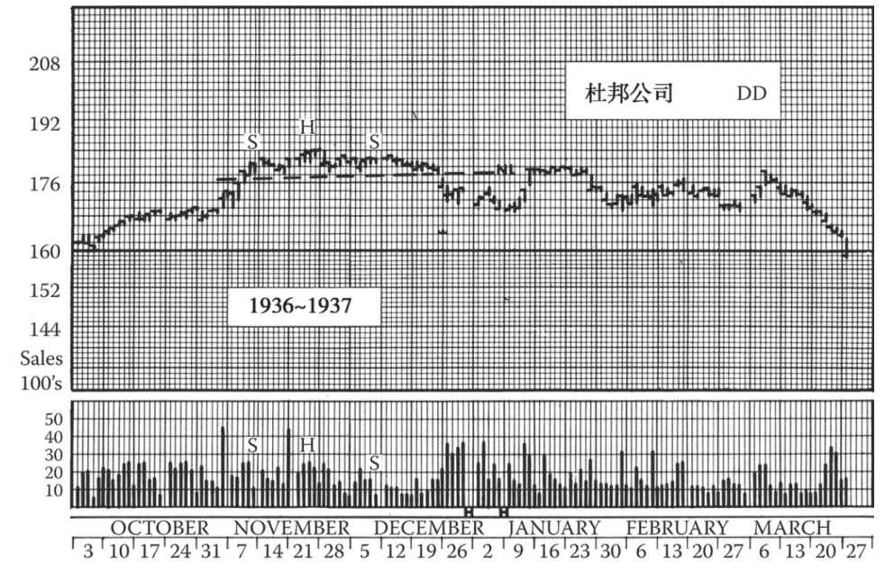
图6-7 当大盘仍明显处于强势阶段时，重要个股的反转经常难以确认，更不用说指导操作。但有时重要个股的反转非常清晰。杜邦公司股价在1936年见顶，比道琼斯平均指数领先4个月。股价走势在12月19日反转，尽管右肩拉得较长（但请注意成交量），反转的杀伤力依然显著。随后股价在1月被拉回，于原颈线位遇阻回落，3月再度被拉回，这些都是市场中的常见情形。请与图6-12比较
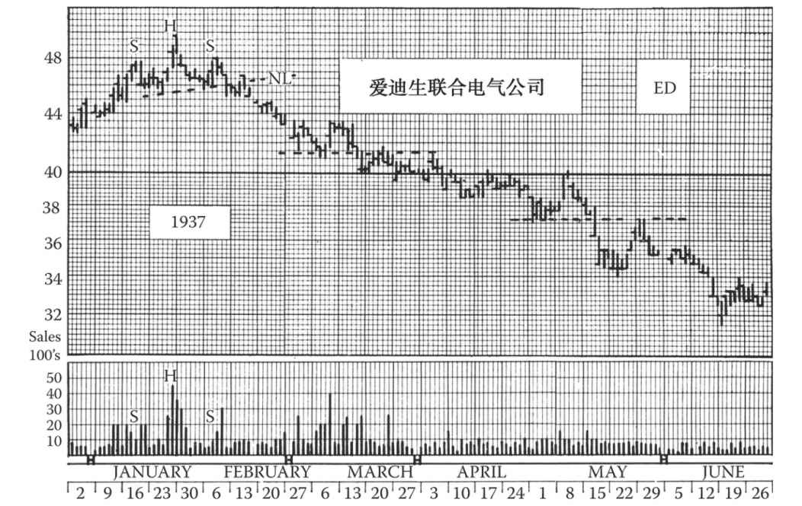
图6-8 这是又一个1937年牛市的头肩顶，图中只出现了一次快速拉回（2月10日）。2月5日成交量激增，股价首次跌破颈线（NL）。股价在3月到达测算公式给出的目标位。请结合第10章中的图10-4（爱迪生联合电气公司股价长期走势图）研究此图。我们在第13章中讲阻力位、支撑位时还会用到这张图
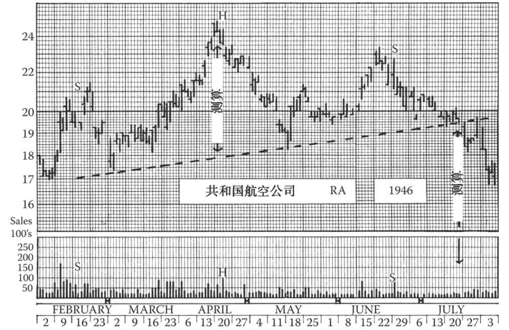
图6-9 共和国航空公司股票在1946年走出了一个长达6个月的头肩顶。当股价在5月跌至2月高点以下时（第一个S），就应开始关注是否会发展成头肩顶。请参考4条要求中的B并注意怎样将头肩顶测算公式（见第7章）应用于上倾颈线的形态。此处的最小下跌目标为12½美元，股价于11月到达该价位。7月27日股价被快速拉回，这是最后的逃顶机会
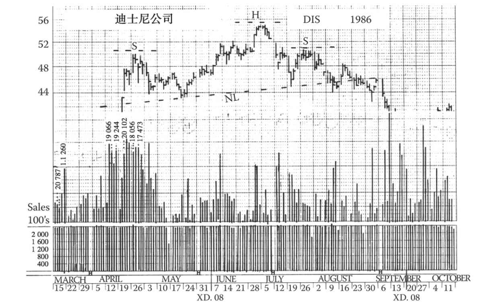
图6-10 迪士尼公司股价在1983年见顶回落，跌了1年后在长期支撑位转牛，股价大幅上扬，之后在1986年4月失去动能，多方回补似已开始。春季放量拉升后，该股走出了一个较大的头肩顶形态，最后股价向下突破颈线达3%伴以成交量放大，确认反转
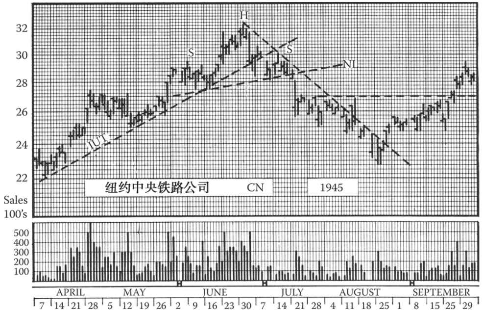
图6-11 纽约中央铁路公司股票在1945年6月走出了一个头肩顶。7月5日股价从头部下跌，突破了中期上升趋势线（IUT）。8月18日到达最小下跌目标24美元，几天后止跌于22¾美元。9月25日回升至预测颈线位，10月再跌至26⅞美元，然后扭头向上，于11月第1周在30美元价位发出“再次买入”信号（在扇形趋势线上）。最终的牛市高点是1月的35½美元。从1945年8月到1946年2月，技术派交易者很难操作该个股。然而，在1945年7月按26～27美元清仓的投资者可在1947年5月庆贺一下，因为那时该股已跌到12美元
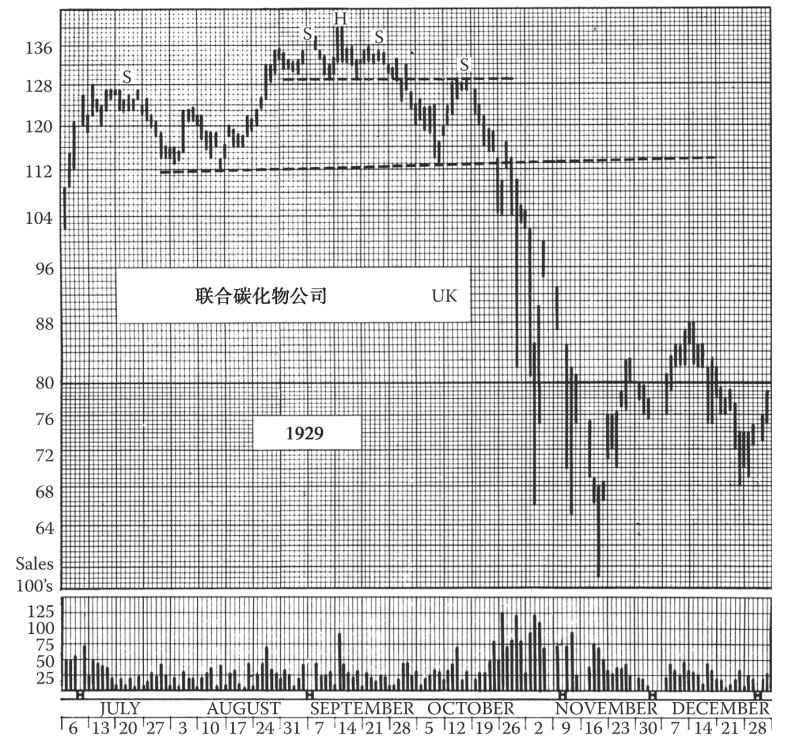
图6-12 1929年的大顶部包含着多个明显的头肩顶，这张图就是个有趣的例子。9月的小头肩顶演变成了一个同样形状大头肩顶的头部。股价在10月9日被拉回至上颈线，给了未于9月28日股价破位时清仓的投资者第2个按128美元出逃的机会。随后在10月19日“跌破”更大头肩顶形态的颈线，10月22日再度被快速拉回。不到1个月，联合碳化物公司股价已从最高点跌去了一半。该股到1932年已跌至15½美元。虽然如1929～1932年那样的惨烈杀跌不太可能再现，但投资者应吸取一个教训：永远别小看头肩形态。此类形态会与第7章所讨论的“各类”形态组合出现。虽然这张图反映的是1929年的情况，但是头肩形在20世纪中期也绝非少见。后文将给出一些当代的例子
6.7 头肩顶确认后的股价走势：测算公式
头肩顶形态的最后一步是跌破颈线，此时可能伴随着成交放量，但成交量不会一开始就放大。如果股价下跌过程中成交维持地量达数日，那么随后股价往往被拉回至颈线位（但极少超过它）。正常情况下，这一波回升恰似“回光返照”；之后股价势必迅速扭头向下突破，同时成交急剧放量。至于个股首次跌破颈线后是否有这样一波回升，似乎常取决于大盘。如果大盘也呈扭头向下之势，那么个股走出头肩顶形态后，可能不会出现这样一波回升，反而放量加速下跌；而如果大盘尚稳，那么个股可能会拉回一次。并且，如果在右肩形成之前颈线就已被跌破，那么出现一波拉回的概率更大，但这当然也没有定规。在任何情况下，此类反弹主要对想卖空股票或卖空股票后需设定止损点位的交易者有实用意义。
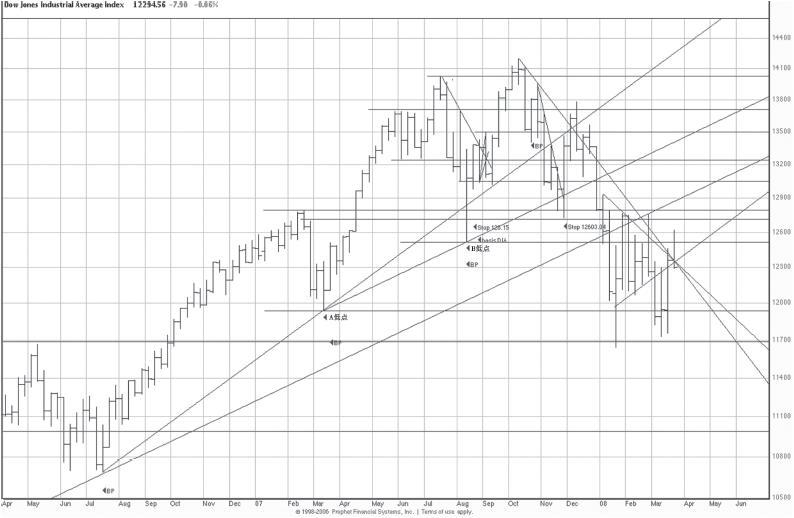
图6-13 2007～2008年道琼斯工业平均指数的头肩顶。edwards-magee.com在2008年年初辨识出了这个巨大的头肩顶，于2008年1月清仓离场，并写道：
请注意A低点和B低点。如果这个延续了1年的形态是一个大顶（可能是双头头肩顶）且A低点为其下界限，那么指数预计会跌到9680点。而如果B低点是决定性的点位，那么指数预计会跌到10836点。道指那时处在为期6个月的下跌趋势中，最后两个半月横盘，高点逐渐下移。9680点可能是最小下跌目标。后来在布什当政末期的大熊市里，道指跌到了6469.95点
那么，头肩顶这种基本反转形态形成后，预示着指数还可能下跌多少（点）呢？可以这样测算：先测算从头部顶点竖直向下到颈线的距离（点数），如图6-9所示；然后从指数在右肩成形后最终突破颈线的位置竖直下探相同距离，所达到的点位就是最小下跌目标。
对于这条测算公式，有一项重要限制。我们前面讲过头肩顶要满足一系列条件。条件A要求“强劲上涨，达到一定涨幅”。如果反转区域成形之前的涨幅不大，那么之后的跌幅也可能不大。简而言之，反转形态需要有一定的空间来反转。所以我们实际上有两个最小下跌目标，一个是头肩顶形成之前的涨幅，另一个是用我们的测算公式测出来的点数，以较小的那个为准。此测算规则在本章的几张例图中得到了反映。现在你可以看到，为什么一条下倾颈线所代表的走势比一条上倾颈线“更弱”，以及弱多少；你还可以看到，从头部顶点到突破颈线处的跌幅已经超过最小预期跌幅的一半。
而对于最大跌幅，则无法定义简单的测算规则。最大跌幅取决于诸多因素，如前期的涨幅、头肩顶的大小、成交量及时间跨度、大盘的长线趋势（非常重要）、股价离下方支撑区域的距离等，后文将讨论其中的一些。
6.8 头肩顶与道氏理论的关系
肯定有一些读者已经开始怀疑，某种意义上，头肩顶只是将道氏理论原则应用于个股走势的结果。的确是这样。股价从头部下跌至颈线、反弹至右肩、然后下跌突破颈线，形成了一系列高点和低点，与道氏理论中发出下跌趋势信号的走势相似。鉴于头肩顶与道氏理论之间的这种逻辑关系，以及头肩顶的重要性、出现频率和可靠性，我们将头肩顶作为要学习的第一个反转形态。但是，在上倾颈线的情况下，头肩顶形态更加明确，提前发出的信号更易捕捉，且信号的发出更加迅速。并且，头肩顶对头部和肩部的形成没有时间要求，也不要求获得另一只股票或平均指数的印证。
除了头肩顶，还存在具有同样重要技术意义的头肩底。（编者按：对底部形态而言，这个术语的描述性不够强。我把它叫作“基尔罗伊 [2] 底部”，参见图7-4。）下一章我们将讨论底部形态。
[1] 1 英里＝1 609.344 米。
[2] 基尔罗伊（Kilroy）是美国士兵在第二次世界大战中创造的一个漫画式的壁画形象。“基尔罗伊到此一游”（Kilroy is here）是美国通俗文化中的一种表现。美国士兵在第二次世界大战中在驻扎地、俘虏营和所到之处常常会画上这个头伸出墙外的滑稽人物，在下面写上“基尔罗伊到此一游”的句子。—译者注